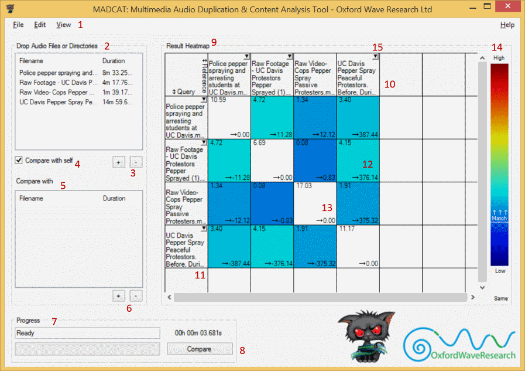
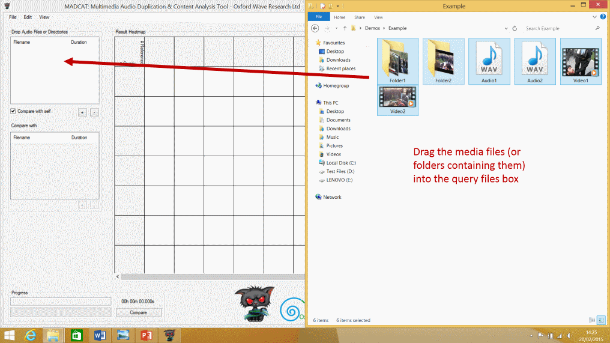
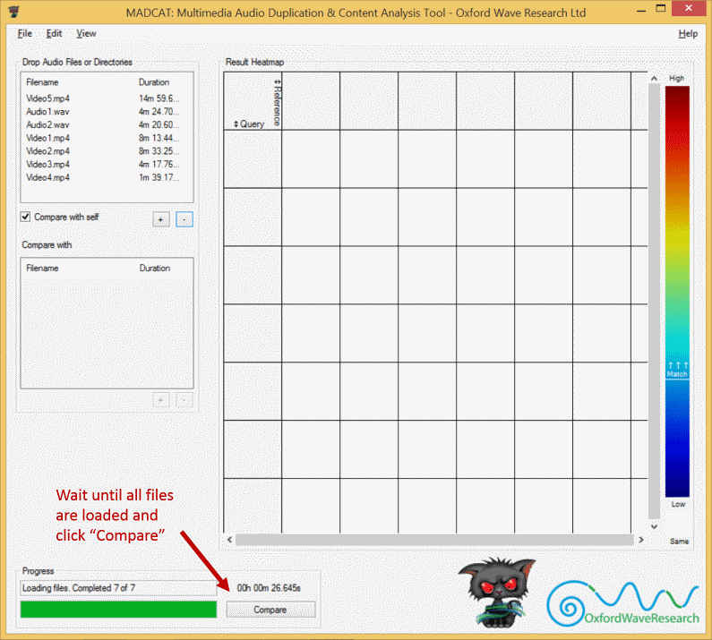
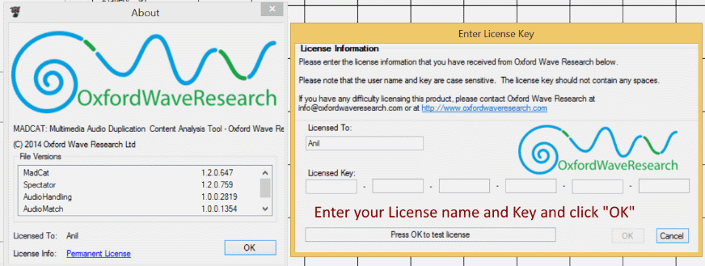
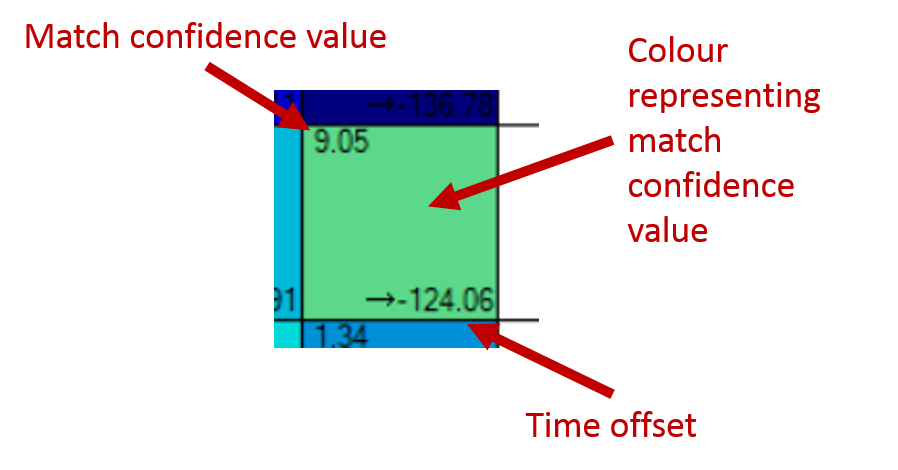

MadCat Manual
MadCat version 1.2.0.647 was used in the making of this manual.Diagram and Key
- Dropdown Options
- Query files list
- Add and remove query file buttons
- “Compare with self” checkbox
- Reference files list
- Add and remove reference files buttons
- Progress tracker, status and timer
- Run comparison button
- Results display
- Query file columns
- Reference file rows
- Match result square for differnet files
- Match result square for the same file
- Colour key for match square background
- File dropdown options
Quick-Start Guide
-
Drag the media files (or folders containing them) into the query files box.
Folders dragged in will be recursively searched for media files. You can also add files using File>Add>Query files… or by using the Add Query file button. Files can be removed by selecting them and clicking the Remove Query file button.
-
Wait until all files are loaded and click Compare.
 -
MadCat will then run a comparison and display the results.


Validating your license
-
MadCat will need a valid license in order to run. You will be asked to validate your MadCat license on install, but you may need to also do this from within the program. To do so, select Help>About from MadCat, which will bring up the About window. You will see your license information displayed at the bottom of this window, click on it to open a new window to validate a new license key. You will need to enter both your license key and the license name given to you by Oxford Wave Research.
 -
Demo and duration based licenses will work for a set duration of time before expiring, whereupon MadCat will cease to operate. Please contact Oxford Wave Research in order to request a renewal of your license. This license can be used by any number of users on any number of machines until its expiry date.
-
USB Key licenses instead are permanent, but require a unique USB Key be loaded onto the machine for the license to be valid. If the USB Key device is not found on the machine by MadCat, it will not operate. Contact Oxford Wave Research to request a USB Key.
To Compare a Set of Media files in MadCat with itself
With MadCat open, any video or audio files can be loaded for comparison by either dragging them (or a folder containing them) into the top-left query file list box, by selecting File>Add>Query Files… dropdown option or by clicking on the Add query file button (the plus sign below the box). Note that the latter two methods will by default expect audio files, but can still select video files by changing the accepted files extensions to “All Files”. Media files can be removed from the comparison by selecting them within this box and clicking the Remove query files button (minus sign). Note that MadCat cannot compare media files that are less than 5 seconds in length.
Once all video files are loaded (the file loading progress bar is in the lower left corner), ensure that that the “Compare with self” checkbox is checked, and then click “Compare” in the lower left corner. MadCat will then run and display a comparison between all media files in the query list.
The titles of the media files will be displayed as columns and rows. The squares will display information on the comparison of the media files that are that column and row. See “Reviewing the results of a Comparison” on how the results are displayed.
To Compare a Set of Media files with another set
With MadCat open, load the first (query) set of video or audio files using the method described above.
Ensure that the “Compare with self” checkbox is unchecked, then load the second (reference) set by dragging the files (or a folder containing them) into the second box (below the first), selecting File>Add>Reference Files…, or using the Add reference file button (the plus sign below the reference files box). Files can be removed by selecting the files to be removed in the reference files box and clicking the Remove reference files button (minus sign).
Once all files are reported loaded in the lower left progress bar, click “Compare”. MadCat will then compare each of the query media files to the reference ones. Reference files will act as columns and the query files as rows in the main display. See “Reviewing the results of a Comparison” on how the results are displayed.
Reviewing the results of Comparisons
The media files to be compared will be used as rows and columns in the comparison display, with squares where these intersect being the comparison results between the row and column files.
-
Within each square, the top left number is the confidence value which represents how well the audio in the two files match. The lower left number is the time offset of where the audio matches of the row media file compared to the column file. The background colour of the square is a representation of the match confidence value as per the colour key to the right side of the comparison results display. A white square background means the files compared are the same file.
 Double clicking a comparison result square will open Spectator with the two compared files synchronised to the time offset given by MadCat. See the Spectator manual for more details on viewing files within it.
-
Selecting Edit>Adjust match threshold… will allow you to edit the required number that the match confidence value for a comparison must be above in order to register as a match (the default match threshold is 2). Selecting View>Hide non-matches will black out squares that do not register as a match (as the match confidence value is below the set match threshold).

-
If a media file has a registered match (a comparison that has higher match confidence value than the match threshold), that file's column or row will have the following dropdown options:
- View in Spectator>Select Multiple Matches… : This will allow you to open the selected file as well as any selection of files it was found to match with into Spectator, synchronised by the MadCat found time offsets. See the Spectator manual for more details on viewing files within it.
- View in Spectator>Select Single Match: This will give you an option for each file found to match with the selected file, and when selected will open both in Spectator synchronised. This is the same as double clicking on the comparison square for these two files. See the Spectator manual for more details on viewing files within it.
- Export>Export to multitrack XML format (Adobe)… : This will allow you to export a synchronised project XML file of the selected track and selected matching files which can be imported as projects into Adobe Audition and Adobe Premiere, or opened in Spectator. Note that the media files used cannot be moved or renamed between exporting the XML and importing into Audition/Premier or opening in Spectator, and also that importing an XML which includes video files into Adobe Audition is not supported. See the “Import as Adobe projects guide” for more details on importing these XMLs.
- Export>Export to multichannel… : This will export the selected file and selected matching files into a synchronised multichannel WAV audio file, with each media file occupying an individual channel.
- Export>Export auto mixed… : This will export the selected file and selected matching files into a synchronised WAV audio file with the audio of the files automatically mixed into a single channel.
- Open matched file locations: This will open the file locations of all files found to match the selected file in Explorer.
-
Comma Separated Value (CSV) files, which can be reviewed in Microsoft Excel, of comparison results can be created via File>Save options:
- Save match list: This will save a CSV with each row beginning with a file and later columns in a line being the matching files with their time offsets to the first file. The full path option will write the full paths for files into the CSV, whilst the filename option will just use filenames.
- Save comparison results: This will save a CSV with the media files as columns and rows with comparison data of files in intersecting squares. The confidence option will give the confidence match value, start offset will give the offset time of the row file from the start of the column file, whilst end offset will use the end of the column file.


{kind=link}
{kind=link}
{kind=link}
{kind=link}
{kind=link}
{kind=link}
Advanced Features
Edit>Cache Fingerprint Files: With this option enabled, MadCat will create fingerprint files (.fpt) for all media files it loads within the same directory if they do not already exist. These fingerprint files can then be used by MadCat for future loading in lieu of the actual files and are significantly smaller, so will be loaded far faster (up to 500 times faster). When loading a media file, MadCat will first look for an associated fingerprint file for the media files in the same directory and load them instead if found. Fingerprint files can also be loaded directly, even without its parent media file (though these will not have the options to export XMLs, WAV files or open in Spectator). Loading a media file when its fingerprint file is already loaded will replace the fingerprint file (though the reverse is not true). Note that this option is enabled by default.
Edit>Group media files in directory: If this option is enabled, then when exporting a project XML for Adobe Audition or Adobe Premiere, instead of each media file occupying its own track, media files within the same directory will be grouped into the same track. If files overlap, files that start later will override the end of the earlier file (though this can be changed within Audition/Premiere). See the “Import as Adobe projects guide” for more details on this.
Minimum Specifications:
Microsoft Windows 7 or 8, 64-bit editions.
4 GB of RAM.